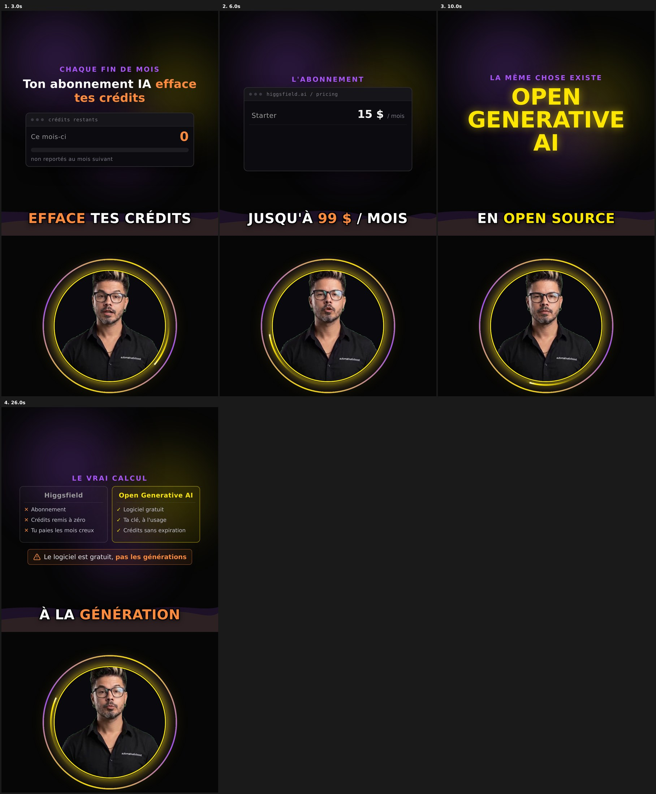

← Toutes les vidéos
Aperçu des 2 effets — #36 (pas encore rendu)
Planche de 4 vignettes à 3s / 6s / 10s / 26s.
1. Anneau du pulse en dégradé jaune/violet — au lieu du jaune plat. Il tourne d'une vignette à l'autre car il pulse sur le beat.
2. Vague sombre jaune/violet dans le haut de l'écran — les taches diffuses derrière le texte + la bande ondulée. Elle dérive lentement (positions différentes à chaque vignette). Elle remplace le dégradé fixe.
Une image fixe rend mal le mouvement de la vague. Si l'idée te va, je rends la vidéo (~10 min) et tu la vois animée sur la préviz.
